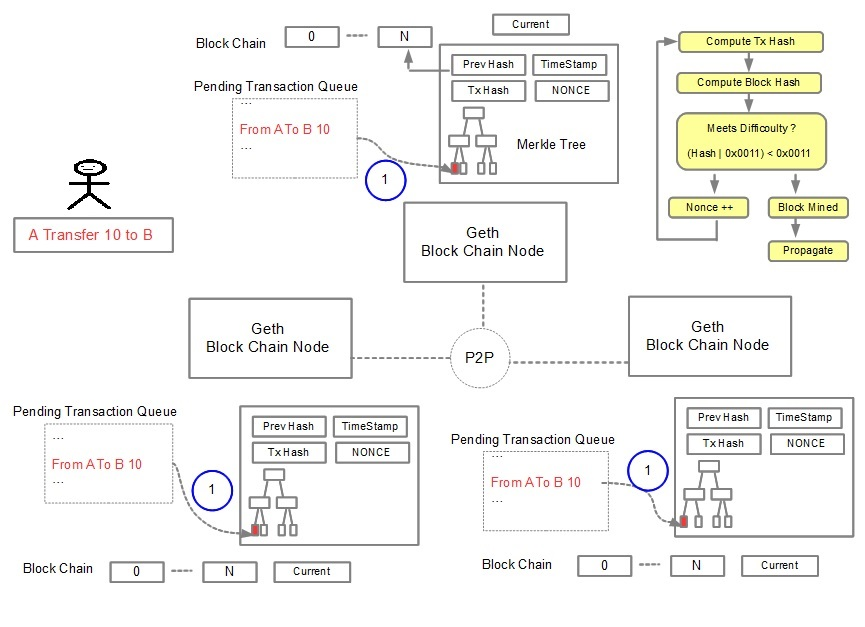

Block Chain
How the nodes compete with each other to include Alice's transaction into a new block in a process called Mining
Each Node:
- 1 Takes the transactions and places them in a merkle tree of the new block
- 2 Performs a computation to produce the proof of work
Mining is very difficult to produce but very easy to verify.

[ Previous ] Block Chain [ Next ]